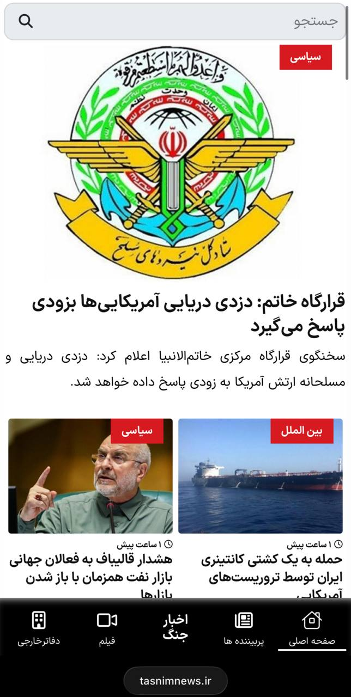

@yebekhe
کانفیگ رایگان که از کانال کانفیگمون یعنی VPN HUB میتونید بردارید. 😎📲
آموزشهای جدید هم که از همینجا میتونید چک کنید، خودم و بقیه ادمینا چیزی باشه قرار میدیم. 📚👀
اگه هم قصد خرید داشتید نظر خود من علائدینه، کیفیت و سرعت و قیمتش نسبت به بقیه بهتره. 🚀💎
Open on TelegramOpen Single Page
دسترسی به Google Drive با Round Sync
اگه گوگل براتون باز میشه، میتونید خیلی راحت با نصب این کلاینت اوپنسورس اندروید به گوگل درایو هم دسترسی داشته باشید.
این نسخه در واقع یه ورژن شخصیسازیشده از Round Sync هست که خودش یه کلاینت rclone برای اندروید هستش.
همونطور که توی ویدیو میبینید، نصب و راهاندازیش خیلی سادهست و همهی درخواستها رو مستقیم به آدرس google.com میفرسته که فیلتر نیست.
کافیه از قسمت تنظیمات، fronting رو فعال کنید، بعد Google Drive رو به اپ اضافه کنید.
از نظر قوانین گوگل هم مشکلی نداره، پس از این بابت خیالتون راحت باشه.
لینک داخلی ویدیو
لینک دانلود از Github:
https://github.com/aleskxyz/Round-Sync/releases/tag/v2.6.0
لینک دانلود داخلی:
📥 نسخه v8a | 📥 نسخه v7a
𝕏 aleskxyz
Open on TelegramOpen Single Pageنسخه جدید 🗿
MHRV-RS v1.8
📥 لینک دانلود داخلی نسخه universal
📥 لینک دانلود داخلی نسخه V8a
📥 لینک دانلود داخلی نسخه V7a
📥 لینک دانلود داخلی نسخه windows arm64
•••••••••
اموزش MHRV-RS ویندوز و اندروید رو هردو رو یکی گذاشته بود یوتیوب دیدم خوب بود
📥 لینک ویدیو در یوتیوب
📥 لینک دانلود داخلی ویدیو
Open on TelegramOpen Single Pageنسخه جدید slipnet 2.5.3
Full version
• لینک داخلی Full universal
• لینک داخلی Full V8a
• لینک داخلی Full V7a
Lite version
• لینک داخلی Lite universal
• لینک داخلی Lite V8a
• لینک داخلی Lite V7a
Open on TelegramOpen Single PageSlipNet v2.5.3 — Key Changes
DNS Scanner Updates: Added TCP and "Both" modes to test and auto-recommend the best transport (UDP, TCP, or Mixed) to bypass ISP blocking. UI Improvements.
Faster Android Connections: TCP/DoT resolvers are now pre-tested (8s timeout) before connecting, dropping dead ones to prevent connection stalls.
Tunnel Chaining: SnowflakeBridge and DohBridge now support upstream SOCKS5, allowing you to stack layers (e.g., DoH-over-Tor).
Encrypted Exports: Added "Export All (Encrypted)" to the main menu.
Optimizations & Docs: Reduced the Tor binary size (up to 29% smaller on armv7) and added official English and Persian user guides to the repository.
_______
SlipNet v2.5.3 — تغییرات مهم
بروزرسانیهای اسکنر DNS: اضافه شدن حالتهای TCP و "Both" (هر دو) برای تست و پیشنهاد خودکار بهترین پروتکل انتقال (UDP، TCP یا ترکیبی) جهت دور زدن محدودیتهای ارائهدهندگان اینترنت.
اتصال سریعتر در اندروید: بررسی پیشنیاز resolverهای TCP/DoT (با مهلت ۸ ثانیه) قبل از اتصال، تا با حذف موارد غیرفعال از توقف در روند اتصال جلوگیری شود.
زنجیرهسازی تونلها (Tunnel Chaining): پشتیبانی پلهای SnowflakeBridge و DohBridge از SOCKS5 بالادستی، که اجازه میدهد لایهها را روی هم قرار دهید (مانند DoH-over-Tor).
خروجی رمزنگاریشده: اضافه شدن گزینه "Export All (Encrypted)" به منوی اصلی.
بهینهسازی و مستندات: کاهش حجم فایل باینری Tor (تا ۲۹٪ در armv7) و اضافه شدن راهنمای رسمی کاربران به زبانهای انگلیسی و فارسی در مخزن برنامه.
GitHub: https://github.com/anonvector/SlipNet/
نسخه جدید CLI در GitHub
Open on TelegramOpen Single Pageپرزیدنت ترامپ: 🇺🇸
جنگ ایران خیلی زود به پایان خواهد رسید و ما پیروز خواهیم شد. 🏁
ما برای فیلد مارشال پاکستان 🇵🇰 و نخست وزیر پاکستان احترام زیادی قائلیم. آنها افراد بزرگی هستند. 👏
ایران حدود ۳ روز فرصت دارد تا زیرساختهای نفتی اش منفجر شود. ⚠️🛢️
پن: البته اگه باز عقب نندازه! که من حس میکنم این سری عقب نمیندازه. 🤔🚫🔙
پن۲: منظور اسکلش این بود خودش پر میشه میترکه نه این که اون میزنه! 😂
Open on TelegramOpen Single Pageتحلیل کلی وضعیت ایران و آمریکا
آمریکا با استفاده از سه ناو هواپیمابر در منطقه سنت کام و همچنین اعزام هواپیماهای سوخترسان به اسرائیل، نشون داده که آماده حمله نظامی جدی هست. این فقط یه تهدید سیاسی نیست، یه آمادگی واقعی نظامیه. ترامپ هم با لغو سفر نمایندگانش به پاکستان و همچنین با انتشار توییتهای تند، فشار رو بیشتر کرده. او صریحاً گفته که همه کارتها دست آمریکاست و ایران هیچ برگی برای بازی نداره.
از طرف دیگه، جمهوری اسلامی در یه بنبست کامل گیر کرده. از نظر ایدئولوژیک، مذاکره با آمریکا یعنی تسلیم شدن، و این چیزی نیست که حکومت بتونه قبول کنه. ولی از نظر عملی، اقتصاد داره فلج میشه. چاههای نفت داره پر میشه چون صادرات متوقف شده، ده میلیون نفر که از اینترنت درآمد داشتن بیکار شدن، و حقوقها ناقص پرداخت میشه. این یعنی فشار داخلی هم داره روی هم انباشته میشه.
با این حال، هنوز اعتراض گستردهای اتفاق نیفتاده. دلایلش هم واضحه: اینترنت بسته است، مردم از سرکوب و زندان و اعدام میترسن، و سپاه و بسیج کنترل خیابونها رو در دست دارن.
به نظر من، احتمال برگشتن به جنگ خیلی بیشتر از چیزیه که قبلاً فکر میکردم. آمریکا داره با قدرت نظامی فشار میاره و صبر نمیکنه. اگه جمهوری اسلامی تماس نگیره یا پیشنهاد قابل قبولی نده، احتمال حمله جدی (یعنی همون پل و نیروگاه) وجود داره.
ولی حتی اگه جنگ هم نشه، این بنبست نمیتونه طولانی بمونه. اقتصاد جمهوری اسلامی توانایی تحمل این فشار رو برای ماههای زیادی نداره. یا رژیم باید مذاکره کنه، یا باید منتظر اعتراضات داخلی باشه، یا باید منتظر حمله خارجی. هر سه راه برای رژیم خطرناکه.
در نهایت، به نظر میرسه که آمریکا صبر نمیکنه و میخواد زودتر به نتیجه برسه. جمهوری اسلامی هم فعلاً نه میتونه مذاکره کنه و نه میتونه مقاومت کنه. این یعنی احتمالاً در روزهای آینده یه تحولی اتفاق میفته، چه جنگ باشه چه مذاکره.
این تحلیل من بود. البته این فقط نظرات منه و قطعاً ممکنه اشتباه باشه! 👽
Open on TelegramOpen Single Pageچنتا اپلیکیشن فیلم و سریال اندروید مود شده
بدون نیاز به اشتراک ماهیانه
● بدون نیاز به لاگین و ثبتنام
● بدون سانسور
● روی اینترنت ملی پرسرعت عالی کار میکنه
● آرشیو خوبی داره،
● قابلیت دانلود مستقیم فیلم و سریال با کیفیت بالا
● دوبله فارسی و زیرنویس حرفهای
لینک دانلود با نت داخلی
🎥 Next Movie
🎥 Delfan
🎥 FilmKio
کار ایشونه 😁 Nnn
@InternetFreedom1
Open on TelegramOpen Single Pageاگر با گیتهاب آشنا هستید، از اونجای که با نت داخلی گیتهاب کار میکنه، میتونید از قابلیت جالب این پروژه واسه دانلود فایل از گیتهاب استفاده کنی
این اموزش پروژه جالبیه برای دانلود از گیتهاب
Open on TelegramOpen Single Page
◾️در صورتی که نمیتونید وارد سایت script.google.com بشید. میتونید از نسخه گرافیکی MITM Domain Fronting استفاده کنید
https://github.com/KNG7-P/MITMConnect
لینک دانلود داخلی
https://punkpaste.ir/f/mitm-connect-setup-c57nn9
Open on TelegramOpen Single Page
mhrv-rs Android v1.2.12
SHA-256: bc3df7cfc37df729edbd24d8d89ef5472e21a23e2815726edf5fdf0dc4e6b475
https://github.com/therealaleph/MasterHttpRelayVPN-RUST
https://github.com/therealaleph/MasterHttpRelayVPN-RUST/releases/tag/v1.2.12
Open on TelegramOpen Single Pageاگه این کار نکرد از این استفاده کنید برای سرویس های گوگل
{"dns":{"queryStrategy":"UseIPv4","hosts":{"geosite:google":"www.google.com"},"servers":["217.218.127.127"]},"inbounds":[{"listen":"127.0.0.1","port":10808,"protocol":"socks","settings":{"auth":"noauth","udp":true,"userLevel":8},"sniffing":{"destOverride":["http","tls"],"enabled":true},"tag":"socks"},{"listen":"127.0.0.1","port":10809,"protocol":"http","settings":{"userLevel":8},"tag":"http"},{"port":10853,"protocol":"dokodemo-door","settings":{"address":"217.218.127.127","network":"tcp,udp","port":53},"tag":"dns-in"}],"log":{"loglevel":"none"},"outbounds":[{"protocol":"freedom","settings":{"domainStrategy":"UseIPv4"},"tag":"direct"},{"protocol":"dns","tag":"dns-out"},{"protocol":"blackhole","settings":{"response":{"type":"http"}},"tag":"block"},{"protocol":"socks","tag":"dummy","settings":{"servers":[{"address":"127.0.0.1","port":10808}]}}],"remarks":"Google Services","routing":{"domainStrategy":"IPIfNonMatch","rules":[{"inboundTag":["dns-in"],"outboundTag":"dns-out","type":"field"},{"inboundTag":["socks-in"],"port":53,"outboundTag":"dns-out","type":"field"},{"ip":["10.10.34.34","10.10.34.35","10.10.34.36"],"outboundTag":"block","type":"field"}]}}
Open on TelegramOpen Single Page
نسخه جدید thefeed
V 0.11.2.rc1
✅ thefeed-android-arm64.apk
📊 Size: 7.7 MB
🔐SHA256:
0d361c9917b482b7bd59185be89bfac2261445c52a8144e5ff063993e290dc23
Developed by https://t.me/CluvexStudio
لینک دانلود داخلی
https://ferchetoilet.ir/download/download.php?id=52-file_69eb253e7996164244e8dd08b
https://punkpaste.ir/f/thefeed-android-arm6-cimm7j
با برنامه TheFeed میتونید آخرین پیام های یک سری کانال تلگرام و تویتر رو با چند کوئری DNS بگیرید 📡📱
میتونید خودتون سرور راه اندازی کنید تا کانال هارو خودتون مشخص کنید، تغیر کانال ها از دور رو فعال کنید، و حتی با لاگین به تلگرام قابلیت ارسال پیام رو فعال کنید 🔐✨
اینم کانفیگاش
@thefeedconfig
Open on TelegramOpen Single Pageاین اپم کاری نداره همون کارایی که داخل سایت script.google.com بعد دیپلوی کردن اسکریپت و گرفتن ایدی
باید برید داخل پوشه اپ و همون قسمت کانفیگ و سرتیفیکت رو داخل ویدیو متین انجام بدید (فعلا با همونی که هست کار میکنه)
بعد vpn.exe رو کلیک راست کنید روی اپ run as administrator اجراش کنید
و دوتا گزینه که یکی داخل خود اسکریپ تعیین کردید و یکی بعد دیپلوی اسکریپت بهتون میده پرکنید
کانکت بزنید
برید به V2rayN و تمام
Open on TelegramOpen Single Pageداخل هر دو روش چه با cmd چه اپ بالا هردو روش
باید داخل script.google.com اسکریپت رو اجرا کنید که فیلتر هستش
داخل V2rayN با این میتونید دسترسی داشته باشید به سایتش
{"dns":{"hosts":{"cloudflare-dns.com":["216.239.38.120"],"domain:com":["216.239.38.120"],"domain:ir":["216.239.38.120"],"domain:org":["216.239.38.120"]},"servers":["https://cloudflare-dns.com/dns-query"],"tag":"dns"},"inbounds":[{"domainOverride":["http","tls"],"listen":"127.0.0.1","port":10808,"protocol":"socks","settings":{"auth":"noauth","udp":true,"userLevel":8},"sniffing":{"destOverride":["http","tls"],"enabled":true,"metadataOnly":true},"tag":"socks-in"},{"listen":"127.0.0.1","port":10809,"protocol":"http","settings":{"userLevel":8},"sniffing":{"destOverride":["http","tls"],"enabled":true,"metadataOnly":true},"tag":"http-in"}],"log":{"access":"","dnsLog":false,"error":"","loglevel":"none"},"meta":null,"outbounds":[{"domainStrategy":"UseIP","protocol":"freedom","settings":{"fragment":{"interval":"10-20","length":"10-20","packets":"tlshello"}},"sniffing":{"destOverride":["http","tls"],"enabled":true,"metadataOnly":true},"streamSettings":{"sockopt":{"domainStrategy":"UseIP","mark":255,"tcpKeepAliveIdle":100,"tcpNoDelay":true}},"tag":"fragment-out"},{"protocol":"dns","tag":"dns-out"},{"domainStrategy":"","mux":{"concurrency":8,"enabled":false},"protocol":"vless","settings":{"vnext":[{"address":"google.com","port":443,"users":[{"encryption":"none","flow":"","id":"UUID","level":8,"security":"auto"}]}]},"streamSettings":{"network":"ws","security":"tls","tlsSettings":{"allowInsecure":false,"alpn":["h2","http/1.1"],"fingerprint":"randomized","publicKey":"","serverName":"google.com","shortId":"","show":false,"spiderX":""},"wsSettings":{"headers":{"Host":"google.com"},"path":"/"}},"tag":"fakeproxy-out"},{"protocol":"freedom","settings":{"domainStrategy":"UseIP"},"tag":"direct"}],"policy":{"levels":{"8":{"connIdle":300,"downlinkOnly":1,"handshake":4,"uplinkOnly":1}},"system":{"statsOutboundDownlink":true,"statsOutboundUplink":true}},"remarks":"216.239.38.120","routing":{"domainStrategy":"UseIP","rules":[{"ip":["geoip:private"],"outboundTag":"direct","type":"field"},{"domain":["geosite:private"],"outboundTag":"direct","type":"field"},{"domain":["geosite:telegram"],"outboundTag":"fakeproxy-out","type":"field"},{"ip":["geoip:ir"],"outboundTag":"direct","type":"field"},{"inboundTag":["domestic-dns"],"outboundTag":"direct","type":"field"},{"enabled":true,"inboundTag":["socks-in","http-in"],"outboundTag":"dns-out","port":"53","type":"field"},{"enabled":true,"inboundTag":["socks-in","http-in"],"network":"tcp","outboundTag":"fragment-out","type":"field"}],"strategy":"rules"},"stats":{}}
اینو با ایرانسل تست کردم اوکیه
Open on TelegramOpen Single Page
🚀 نسخه اختصاصی ویندوز MasterHttpRelayVPN منتشر شد!
یک ابزار قدرتمند و کاملاً مستقل (Standalone) برای دور زدن فیلترینگ که ترافیک شما را از طریق زیرساختهای قدرتمند گوگل (Google Apps Script) و با روش Domain Fronting تونل میکند.
✅ ویژگیهای این نسخه:
بدون نیاز به سرور (VPS): فقط با یک اسکریپت رایگان گوگل کار میکند!
تنظیم خودکار: پروکسی کل ویندوز را به صورت اتوماتیک تغییر میدهد.
راهنما داخل فایل زیپ هست - لطفا مطالعه فرمایید
این پروژه بر گرفته از زحمات عزیزانی هست که صفحه گیت هابشون در پایین گذاشته شده
https://github.com/patterniha/MITM-DomainFronting
https://github.com/masterking32/MasterHttpRelayVPN
تشکر از تیم WhiteDns
لینک دانلود داخلی
https://dl.toolschi.com/up/fb6a5977aa14898e.zip
https://ferchetoilet.ir/download/download.php?id=34-file_69e9316a03916abf4a1f32c57
https://storage.iran.liara.space/zarin/v1/2026-04-22/bfc06bcc15b8bf4c44fde4332abfd960.zip
Open on TelegramOpen Single Pageلینک دانلود داخلی V2rayN win
https://storage.iran.liara.space/zarin/v1/2026-04-22/d8e8f1e1ac14251e89ea6be2e1aa0115.zip
https://ferchetoilet.ir/download/download.php?id=34-file_69e9311a38a876e405f798806
@ConfigWireguard
Open on TelegramOpen Single Page
آموزش استفاده از Master Http Relay
☠️بدون فیلترشکن به یوتوب ، اینستاگرام ، تل و بیشتر چیزا وصل میشه
فایل استفاده شده توی ویدئو: https://t.me/MatinSenPaii/2786
دستور اجرا:
python main.py
آموزش متنی در گیت هاب:
https://github.com/masterking32/MasterHttpRelayVPN/blob/python_testing/README_FA.md
اولش یوتیوب بود الان بیشتر چیزا میاره
⭐️ کاملاً رایگان
⭐️ سرعت بسیار بالا
⭐️ بدون نیاز به دانش شبکه
تماشا در تلگرام | تماشا در یوتوب
لینک دانلود داخلی۱ | لینک دانلود داخلی۲
حمایت از متین
مشکل پخش نشدن ویدئو:
1- https://t.me/MatinSenPaii/2792
2- https://t.me/MatinSenPaii/2793
3- https://t.me/MatinSenPaii/2797
4- https://t.me/WeebsDungeon/405897
نکات مهم راجب این متد:
https://t.me/MatinSenPaii/2799
Open on TelegramOpen Single Pageپیرم و گاهی دلم یاد جوانی میکند 🕰️✨
بلبل شوقم هوای نغمهخوانی میکند 🎶🐦
همتم تا میرود ساز غزل گیرد به دست 🎻
طاقتم اظهار عجز و ناتوانی میکند 😔
بلبلی در سینه مینالد هنوزم کاین چمن 🌿
با خزان همآشتی و گلفشانی میکند 🍂🌸
ما به داغ عشقبازیها نشستیم و هنوز 🔥
چشم پروین همچنان چشمکپران میکند 👀✨
نای ما خاموش ولی این زهره شیطان هنوز 🌙
با همان شور و نوا دارد شبانی میکند 🎵🐑
گر زمین دود هوا گردد همانا، آسمان ☁️
با همین نخوت که دارد آسمانی میکند 🌌
سالها شد رفته دمسازم زدست اما هنوز 🕰️
در درونم زنده است و زندگانی میکند 💓
با همه نسیان تو گویی کز پی آزار من 🤔
خاطرم با خاطرات خود تبانی میکند 🤝
بیثمر هر ساله در فکر بهارانم ولی 🌱
چون بهاران میرسد با من خزانی میکند 🍂
طفل بودم دزدکی پیر و عالیم ساختند 👶➡️👴
آنچه گردون میکند با ما نهانی میکند 🌌🤫
میرسد قرنی به پایان و سپهر بایگان 📜
دفتر دوران ما هم بایگانی میکند 🗄️
«شهریارا» گو دل از ما مهربانان نشکنید 💔
ورنه قاضی در قضا نامهربانی میکند ⚖️🚫
Open on TelegramOpen Single Pageوضعیت مسخرهای هست واقعا! 😓 به عالم و آدم دارن اینترنت پرو میدن! 🌐 این وسط مردم عادی فقط غریبهان! 🚶♂️ این چیزی که من میبینم فک نکنم اینترنت دیگه باز بشه، حداقل حالا حالاها باز نمیشه 🚫. اصلاً لفظ اینترنت پرو خودش مسخرهس! 😒 چیزی که حق همه است رو دارن جیرهبندی میکنن: ۵۰ گیگ در ماه، اونم دو میلیون و صد! 💸 و در اختیار افراد خاص!
والا من برم فیلترشکن بخرم برام ارزون تر در میاد!
Open on TelegramOpen Single Pageاسماعیل بگایی، سخنگوی وزارت امور خارجه جا: 🇮🇷🗣️
ما هیچ برنامهای برای دور بعدی مذاکرات نداریم. 🚫📅
در حال حاضر، ما در مورد مشارکت خود در دور بعدی مذاکرات تصمیم نگرفتهایم. 🤔
جمهوری اسلامی هیچ مهلت یا اخطاری را در تأمین منافع ملی خود به رسمیت نمیشناسد. 🚫⏳
حفظ منافع ملی تا زمانی که لازم باشد ادامه خواهد یافت و در صورت هرگونه ماجراجویی جدید از سوی ایالات متحده یا اسرائیل، نیروهای مسلح با تمام توان به صورت قاطع پاسخ خواهند داد. 🛡️💥🇺🇸🇮🇱
در هیچ مرحلهای از مذاکرات جاری یا قبلی، موضوع انتقال ذخایر اورانیوم غنیشده ایران به ایالات متحده یا هر کشور دیگری مطرح نشده است و اساساً این گزینه در دستور کار جمهوری اسلامی قرار ندارد. ⚛️🚫🚀
Open on TelegramOpen Single Page
حداقل قبل از اینکه یه خبریو کپی کنین زرت و زرت، اول نگاه کنین اون سایتی که بهش رفرنس میدید اصلا اینو کار کرده؟ 🧐📉🚫
تا یکی میگه پخ، همه ازش کپی میکنن!
اینم سایت فیکنیوز، تسنیم، که خبر پهباد پرانی اصلا نیست توش😐
Open on TelegramOpen Single Pageایران دیروز تصمیم گرفت در تنگه هرمز شلیک کند — این یک نقض کامل توافق آتشبس ماست! بسیاری از گلولهها به سمت یک کشتی فرانسوی و یک کشتی باربری از بریتانیا پرتاب شد. این کار مهربانانه نبود، مگر نه؟ نمایندگان من به اسلامآباد، پاکستان میروند — آنها فردا عصر برای مذاکرات آنجا خواهند بود. ایران اخیراً اعلام کرد که تنگه را میبندد، که عجیب است، زیرا محاصره ما قبلاً آن را بسته است. آنها بدون اینکه بدانند به ما کمک میکنند و کسانی هستند که با بسته بودن مسیر زیان میبینند، روزانه ۵۰۰ میلیون دلار! ایالات متحده هیچ چیز از دست نمیدهد. در واقع، بسیاری از کشتیها همین الان به سمت ایالات متحده، تگزاس، لوئیزیانا و آلاسکا در حرکتاند تا بارگیری کنند، به لطف گارد انقلابی ایران که همیشه میخواهد «مرد سختگیر» باشد! ما یک پیشنهاد بسیار منصفانه و معقول ارائه میدهیم و امیدوارم آن را بپذیرند زیرا اگر نپذیرند، ایالات متحده هر نیروگاه و هر پل را در ایران از کار میاندازد. دیگر آقای مهربان نیستیم! آنها سریع و آسان سقوط خواهند کرد و اگر پیشنهاد را نپذیرند، افتخار من خواهد بود که کاری که باید انجام شود را انجام دهم، کاری که باید توسط سایر رئیسجمهورها در ۴۷ سال گذشته علیه ایران انجام میشد. زمان پایان ماشین کشتار ایران فرا رسیده است!
رئیسجمهور دونالد جی. ترامپ
Open on TelegramOpen Single Page🌙🚀 وسط همه این چیزا یه خبر مهم از تکنولوژی بدم:
بعد گذشت چند روز از پرتاب آرتمیس ۲ به سمت ماه 🌕 و بازگشت اون، دانشمندان ناسا رو تصاویر گرفته شده بررسی های تحلیلی ای انجام دادن که قابل تامل بود! 🤯
دانشمندان پس ساعت ها 🔬 بررسی تصاویر مشاهده کردند هنوز هم تصویر خمینی و آفتابهاش در ماه دیده میشود! 🌚😂
Open on TelegramOpen Single Page FarahVPN | فراح وی پی ان
FarahVPN | فراح وی پی ان
 کریپتو و ایردراپ شیروانی
کریپتو و ایردراپ شیروانی
 CongNet VPN | کانگنت ویپیان
CongNet VPN | کانگنت ویپیان
 اطلاع رسانی Max VPN
اطلاع رسانی Max VPN
 Proxy MTProto | پروکسی
Proxy MTProto | پروکسی
 یـ بـ خـ
یـ بـ خـ